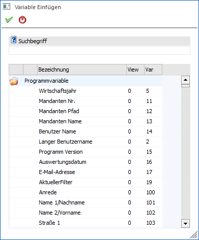
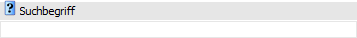
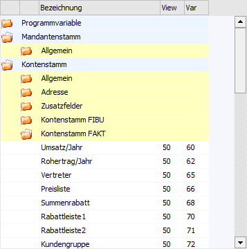

Unter anderem durch Anklicken des Buttons "Variablen" im Fenster Textbausteine kann innerhalb des Textbausteins eine Variable hinterlegt werden. Variablen sind Platzhalter und werden bei der späteren Nutzung des Bausteins automatisch durch "richtigen" Inhalt ersetzt (z.B. bei der Erstellung einer Serienmail oder einem Serienbrief).

Suchbegriff

Ø Suchbegriff
Die Auswahl kann durch die Eingabe eines Suchbegriffs eingeschränkt werden. Die Suche erfolgt in dem Feld "Bezeichnung" und wird durch Bestätigung des Begriffs ausgelöst.
Tabelle "Suchergebnis"

In der Tabelle werden nach Auslösen der Suche (Suchbegriff bestätigen) die gefundenen Variablen angezeigt. Per Doppelklick oder Enter-Taste kann die ausgewählte Variable anschließend in das Ausgangsfenster übernommen werden.
Hinweis
Derzeit werden die Variablen der folgenden Datenbereiche zur Verfügung gestellt:
ü 000 - Programmvariablen
ü 001 - Mandantenstamm
ü 050 - Kontenstamm (Personenkontenstamm komplett)
ü 055 - Kontenstamm (Kontenstamm allgemein)
ü 400 - AN-Stamm Österreich
ü 530 - AN-Stamm Deutschland
ü 170 - CRM Incidences und Schritte
Buttons
Ø Ok
Durch Anwahl des Buttons "Ok" bzw. der Taste F5 wird die Variable in den Textbaustein übernommen. Zusätzlich zu diesem Platzhalter wird ein Formatierungsvorschlag, abhängig von der Variable angezeigt. D.h. wenn z.B. der Umsatz eingefügt wird, so wird die Variable als Zahl formatiert. Dieser Formatierungsvorschlag ist noch manuell veränderbar. Der Platzhalter wird an die Position gestellt, an welcher der Cursor im Textbaustein zuletzt gestanden hat.
Ø Ende
Mit Hilfe des Buttons "Ende" bzw. der Taste ESC wird das Fenster geschlossen.